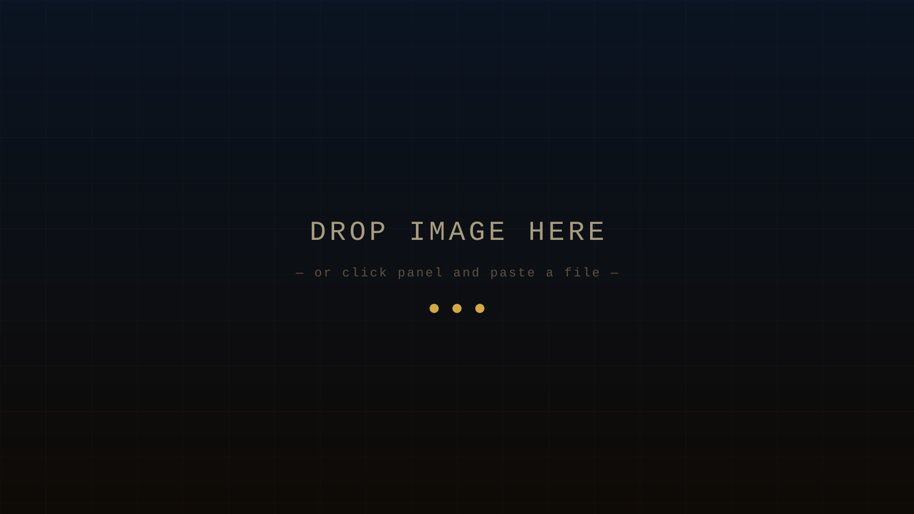

Your Comic Title
A long-scroll documentary comic
Label — drag me
Captions hold body text and can also be dropped below the frame. Drag the handle on either primitive to move it.
Narrator
Speech bubbles work the same way. Drag the bubble to a different corner.
Thought bubbles are for internal monologue. Drag to a different corner or drop below the frame.
Plain text on a dark background — no image needed. Useful for chapter beats or pauses in the narrative.
The Daily Press
"A pull-quote card — useful for press coverage and notable reactions."
— an attributed source
— End of demo —
Replace these frames with your own comic. Open ?edit=1 to edit. Hit Export when you’re done.
Get started →